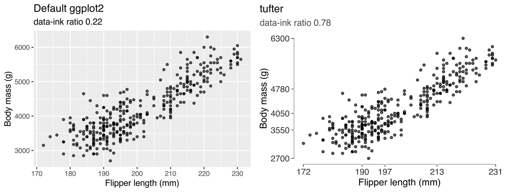
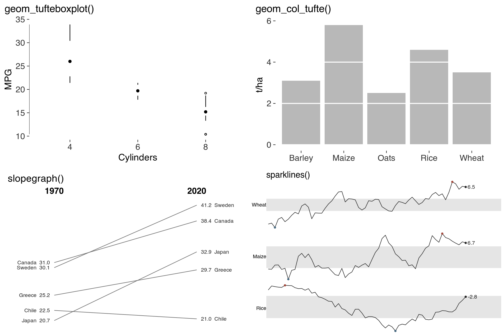

Documentation lives at https://lobsterbush.github.io/tufter/. There’s a gallery built on simulated data, a second one built on live API data from CRAN logs, USGS earthquakes, Open-Meteo and Wikipedia, and a walk through what each measurement actually computes.
Edward Tufte’s principles of graphical design, as working ggplot2 code and as measurements you can apply to a figure you’ve already drawn.
Most Tufte packages give you a theme. That’s one principle out of about twenty, and I think it’s the easiest one. His real argument is that statistical graphics can be evaluated, and he hands you the quantities to do it with: the data-ink ratio, the lie factor, data density. This package does both halves.

Installation
# install.packages("remotes")
remotes::install_github("lobsterbush/tufter")The two halves
The forms Tufte designed or argued for:
| Function | What it does |
|---|---|
theme_tufte() |
Strips the panel, the grid, the border, the legend frame |
geom_rangeframe() |
An axis line spanning only the range the data occupy |
geom_quartileframe() |
The same, broken at the quartiles, so the axis carries the five-number summary |
geom_dotdash() |
Marginal distributions on both axes, in place of a frame |
geom_tufteboxplot() |
The box plot with the box erased; three variants |
geom_col_tufte() |
Bars with the gridlines erased where they cross the bars |
geom_cleveland_dot() |
Dot plot with leader lines, so a zero baseline isn’t needed |
slopegraph() |
Before-and-after for many units, with every number printed |
sparkline(), sparklines()
|
Word-sized graphics, with normal band and extremes |
facet_tufte() |
Small multiples, scales fixed so panels stay comparable |
geom_text_last() |
Labels on the data, in place of a legend |
tufte_pal(), scale_colour_tufte()
|
Greys, greys with one accent, muted earth tones |
label_source() |
Say where the numbers came from, on the graphic |
save_tufte() |
ggsave() with print defaults, and a clipping check first |
The quantities he defined:
| Function | What it measures |
|---|---|
data_ink_ratio() |
The share of ink that varies with the data, estimated by rendering the plot with and without its data layers |
lie_factor() |
The size of the effect shown over the size of the effect in the data |
data_density() |
Numbers per square inch of data graphic |
bank_to_45() |
The aspect ratio that puts the slopes nearest 45 degrees, where they’re judged best |
check_contrast(), contrast_ratio()
|
Whether the ink is dark enough to see, against the WCAG minima |
check_labels_fit() |
Whether any text will be clipped at the printed size |
tufte_audit() |
All of the above, graded or measured as Tufte states them |
audit_figures() |
The same across every figure in a paper, most unmet criteria first |

The short version
library(ggplot2)
library(tufter)
base <- ggplot(mtcars, aes(wt, mpg)) + geom_point()
data_ink_ratio(base)
#> ── Data-ink ratio
#> 6% of the ink in this figure varies with the data.
lean <- base + geom_rangeframe() + theme_tufte()
data_ink_ratio(lean)
#> ── Data-ink ratio
#> 74% of the ink in this figure varies with the data.The audit
tufte_audit(ggplot(mtcars, aes(wt, mpg)) + geom_point())
#> ── Tufte audit ──
#> At 6.5in x 4in: 3 stated criteria not met.
#> ── Not met
#> ✖ The panel is filled with #EBEBEBFF. The fill is identical whatever the
#> numbers are, so it's non-data ink and Tufte's instruction is to erase it.
#> Erase non-data ink - VDQI ch. 4
#> ✖ Minor gridlines are drawn. They subdivide the scale past the precision anyone
#> reads off a graphic, so they're non-data ink.
#> Erase non-data ink - VDQI ch. 4
#> ✖ No caption. Tufte asks that evidence be thoroughly described and its sources
#> named on the graphic itself, so a reader can check the claim without hunting
#> through the surrounding text. See label_source().
#> Documentation - Beautiful Evidence ch. 6
#> ── Measured, not graded
#> Tufte states a direction for these rather than a threshold. Read them against
#> another draft of the same figure.
#> • Data-ink ratio 0.06: 6% of the ink varies with the data.
#> • Data density 3.1 numbers per square inch.
#> • 1 distinct colour in use.
#> • 1 series overlaid in one panel.
#> ── Met
#> • No full panel border
#> • No pie chart
#> • Lie factor within Tufte's band
#> • No legend to decode
#> • No variable encoded twice
#> • Wider than it is tall
#> • Ink clears the WCAG contrast minimum
#> • Nothing is clipped at the printed sizeThere’s no score, and I did that on purpose. Tufte says two different kinds of thing. Sometimes he gives a criterion a graphic either meets or doesn’t: bars measured from zero, a lie factor between 0.95 and 1.05, graphics wider than they’re tall, non-data ink off the page. Those get graded. Other times he gives only a direction. He asks that the data-ink ratio be maximised “within reason” and that data density go up, and he never says how much is enough. Those get measured, and the judgement stays with you.
Earlier versions of this package made up cutoffs for the second kind. That put my numbers in his voice, so they’re gone. I also think a single score would need a weighting between a pie chart and a missing source note, and Tufte doesn’t offer an exchange rate. tufte_principles() marks which is which in its criterion column.
For a whole paper at once, audit_figures() orders figures by how many stated criteria each one fails. That’s a count rather than a proportion, so it’s comparable across figures. A percentage would divide by a denominator that shifts with the plot type.
What it’s good at is the mechanical stuff you stop seeing after the fifth draft. A pie chart. A bar baseline that isn’t zero. A bar chart on a log scale. A variable encoded twice. A legend where direct labels belong. A subtitle that gets clipped at the size you’re about to save.
What it won’t tell you
tufte_principles() lists every principle, its source, the function that implements it, and whether the audit can check it at all.
p <- tufte_principles()
p[!p$audited, c("principle", "implemented_by")]
#> Show comparisons slopegraph(), facet_tufte()
#> Show causality NA
#> Show multivariate data facet_tufte(), sparklines()
#> Content counts most of all NAThe two NAs are the honest part. Nothing in the package reaches them.
A figure can meet every stated criterion and still be pointless. Tufte’s first principle is that content counts most of all, and no function evaluates that.
How this sits alongside other packages
Some of this duplicates work that already exists. ggthemes has a theme_tufte(), a geom_rangeframe() and a geom_tufteboxplot(). It’s actively maintained and widely used. If the theme is all you want, it’s the lighter dependency and you should use it. Loading both packages masks theme_tufte(), so watch for that.
If you need labels that can’t collide, directlabels and ggrepel solve the general problem properly. geom_text_last() here only handles the narrow case of labelling the end of a series.
The gap I think this fills is measurement. As far as I can tell, no R package computes the data-ink ratio, the lie factor or data density. A search of every CRAN title and description turns up nothing for “data-ink”, “lie factor” or “chartjunk”. The near neighbours do adjacent work: ggcheck reads built ggplot objects to autograde student code, ggalttext reads them to write alt text, and GGenemy audits plots for accessibility, meaning WCAG contrast and colour-vision deficiency. The only data-ink implementation I could find in any language is a Java repository, archived in 2025 and last worked on in 2010, and it makes you segment the image by hand before it counts anything.
check_contrast() overlaps GGenemy deliberately. A package that tells you to erase ink owes you a check that what’s left is still visible. GGenemy goes further on accessibility, including colour-vision simulation, and it’s the better tool if that’s your question.
One caution about what the numbers are for. The empirical literature doesn’t support maximising the data-ink ratio as an objective, and hasn’t since the mid nineties. I treat these measurements as diagnostics. They tell you where a figure spends its ink, and I’d rather you argue with them than optimise against them. The measuring article lays out the evidence against the principle.
Several Tufte forms are unmaintained or missing in R. CGPfunctions, which provided newggslopegraph(), was removed from CRAN in November 2025. leeper/slopegraph hasn’t moved since 2018. ggtufte, Jeff Arnold’s own attempt to spin the Tufte parts out of ggthemes, was abandoned in 2018. I couldn’t find any implementation of the bar chart with gridlines erased through the bars, no first-class dot-dash geom, and no Tufte colour palette. ggthemes ships Few, Cleveland, Tableau and Ptol palettes, but nothing from Tufte.
The measurement half is why this package exists. The drawing half is partly convenience and partly consolidation.